City Slicker Rear Rack Installation
Tools required:
- 3mm Allen
- 5mm Allen
- Phillips Screwdriver
- 10mm Socket
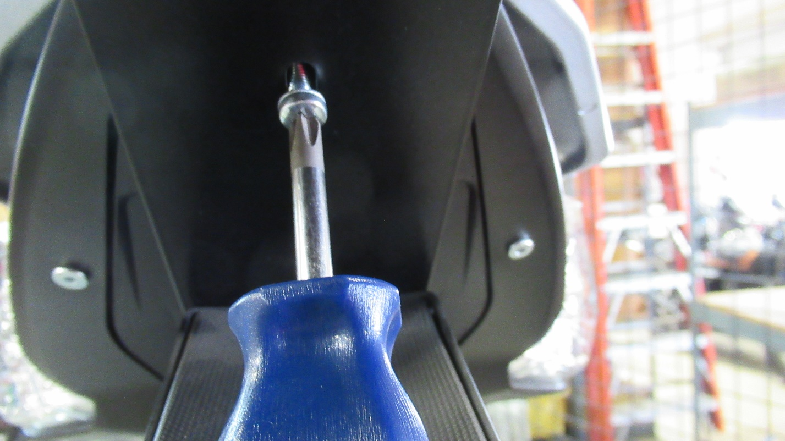
Use a 3mm Allen to remove the top screw.
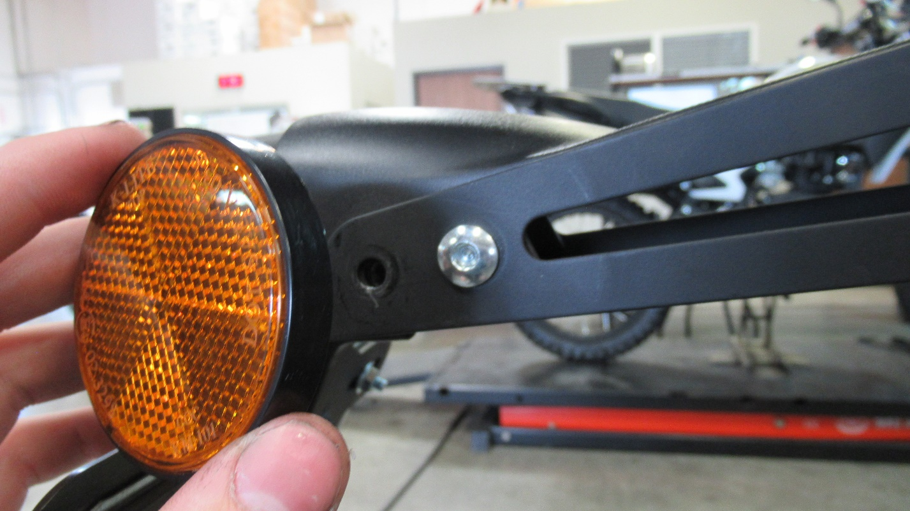
Remove reflectors and replace with 5mm Allen screw
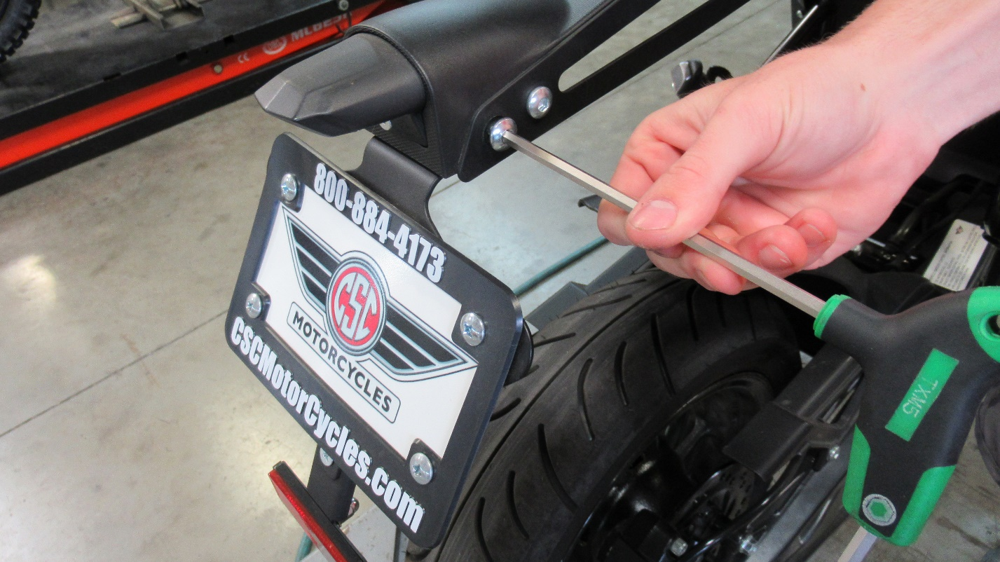
After tightening the inner most 5mm Allen remove the outer bolt as seen in the photo above. Repeat on the other side.
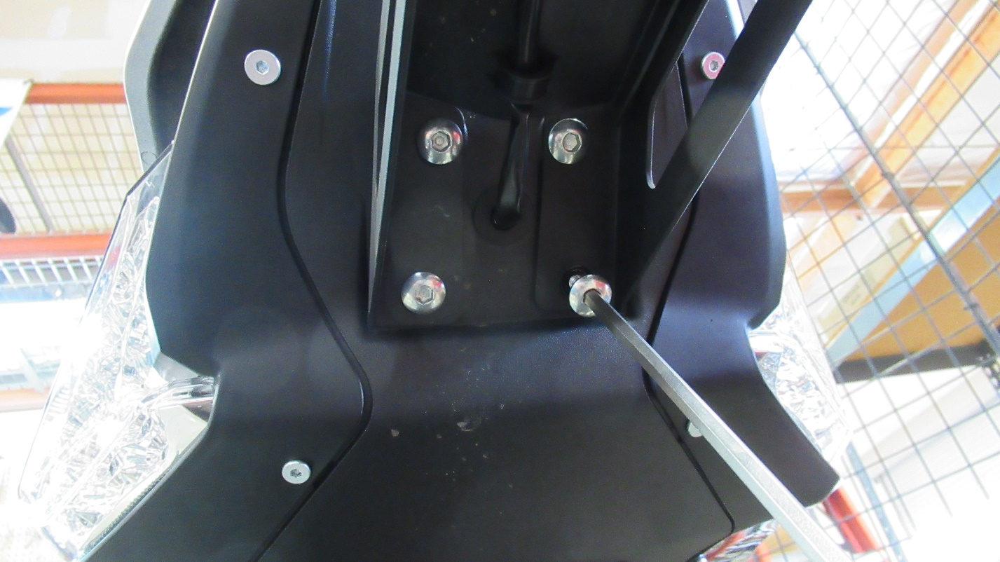
Use a 5mm Allen to remove the 4 screws.
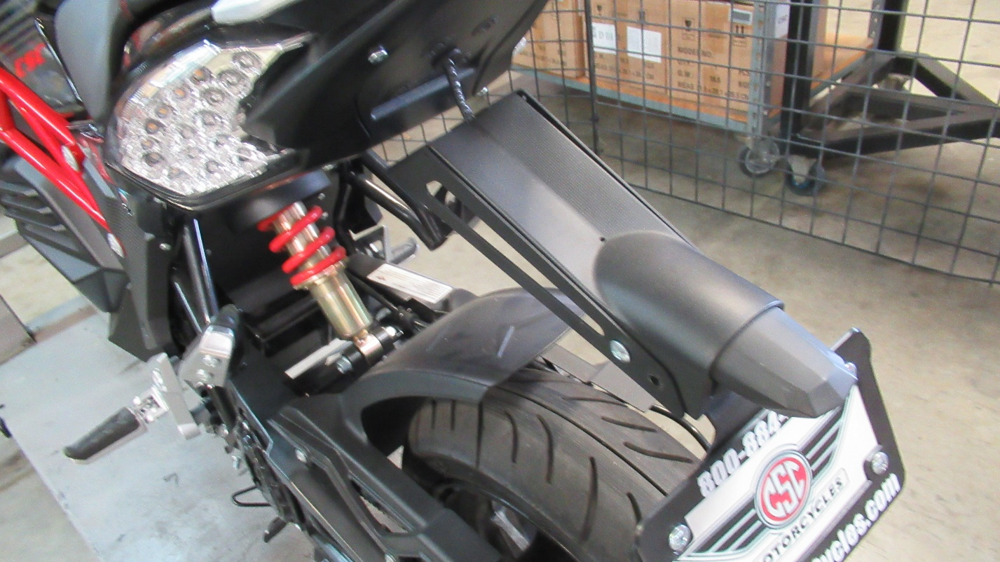
Once removed the piece will hang limp
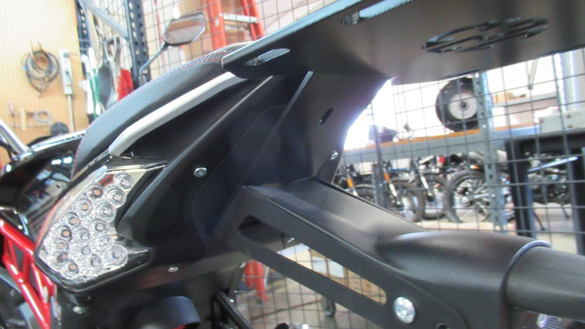
Line up the rack with the holes as seen above
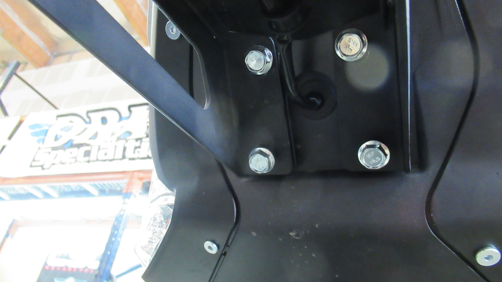
Tighten the 10mm bolts using one’s fingers. At this point the rack will still be lose
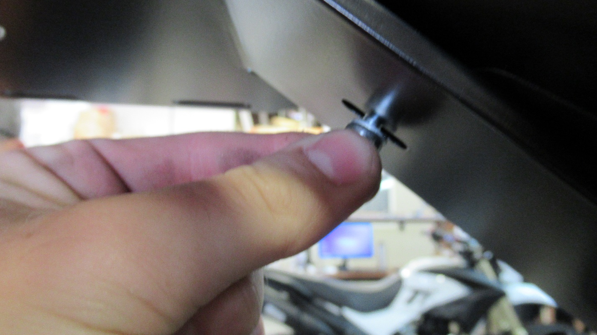
Tighten the Phillips screw using one’s fingers
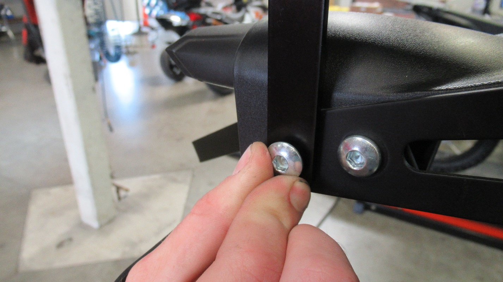
Reattach the left most bolt with the metal support of the rack using one’s fingers. As seen above. Repeat for the other side
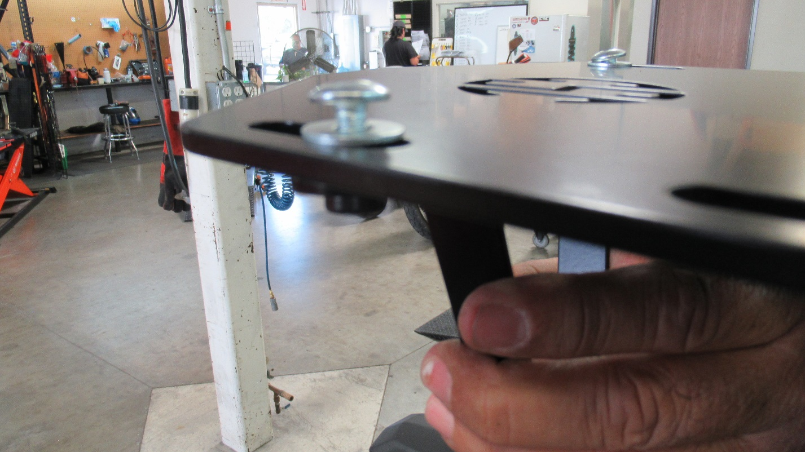
Attach the supports and rack together with the bolts and washers provided. Place in middle of the gap for optimal results.
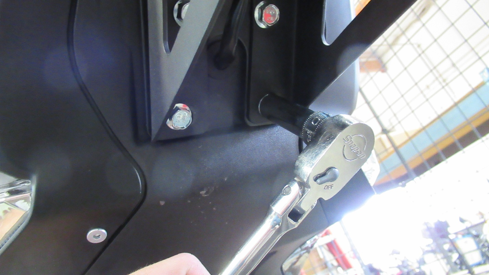
Use a 10mm Allen to tighten the rack.
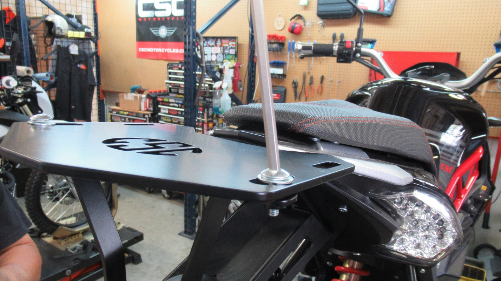
Use a 5mm Allen to tighten the top screws.
Use a Phillips screwdriver to tighten the screw under the rack.
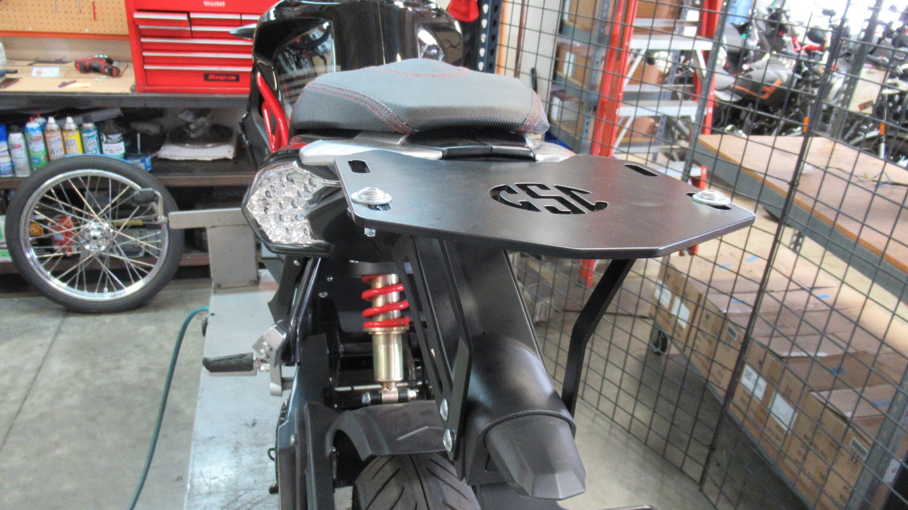
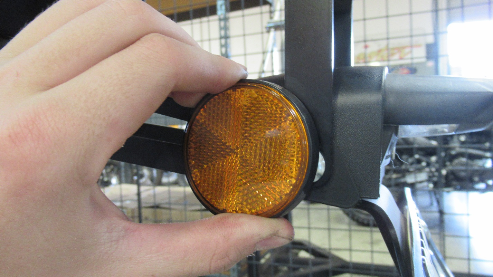
The reflectors taken off in step 2 can be reinstalled by using a 5mm Allen to remove the two front screws.
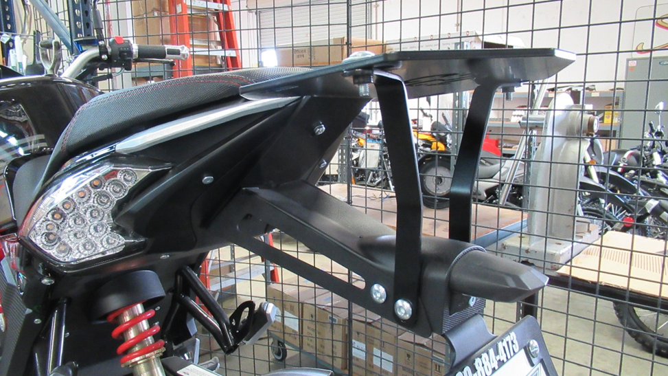
And there you have it a finished rear rack install.